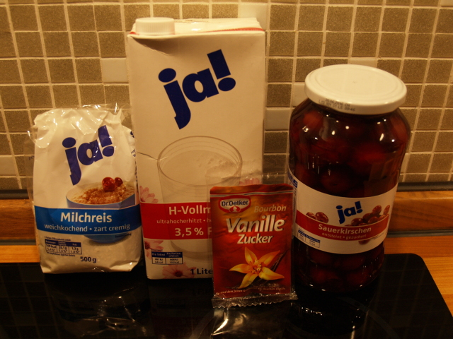
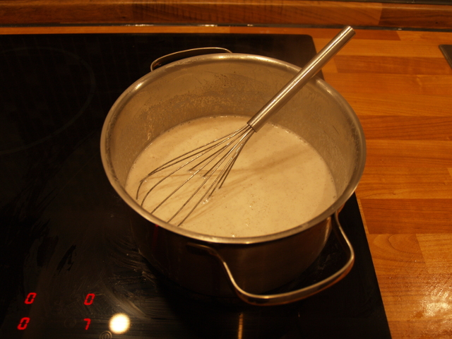
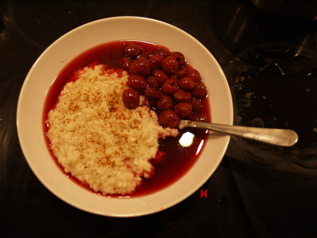

Welcome to
Three Photo Dinner .
You will find simple receipes
You will spend no more than 5-10 Minutes preparing them.
Have a try.
Hover the mouse over the picture or swipe on a mobile device.
Posted at: March 13, 2015

Ingredients
1 liter of milk
1 packet of sugar or vanilla sugar
250g of rice pudding (half the package)
1 jar of cherries
Possible additions
1 can of peaches (instead of cherries)
Cinnamon

Preparation
Cook milk
Pour sugar and rice into hot milk
Wait until milk is gone and stir every couple of minutes

Serve and eat
Put rice pudding in a bowl, season with cinnamon and put cold cherries on top.
Posted at: March 13, 2015
Ingredients
Salt
1 bag or glass of green olives
1 glass of green pesto genoves
100-200g of noodles (~half a package)
Preparation
Put salt in water and boil it
Cook noodles
Cut olives
When ready, let the water out of the pot
Add a quarter of the pesto glass and olives
Serve and eat
Stir a bit and it's ready to eat
Posted at: March 13, 2015
Ingredients
Salt, Pepper, Herbs
1 Edam, Cheddar or Gouda cheese
1 Cucumber
A bunch of tomatoes
1 Avocado
1 Bologna sausage or ham pieces
1 Baguette
Possible additions
1 Mozarella
1 Paprika/Pepper/Capsicum
1 Red onion
A pinch of garlic powder
Preparation
Cut everything in little pieces
Season everything with salt, pepper and herbs
Cut the bread
Serve and eat
Mix everything in a big bowl or cooking pot.